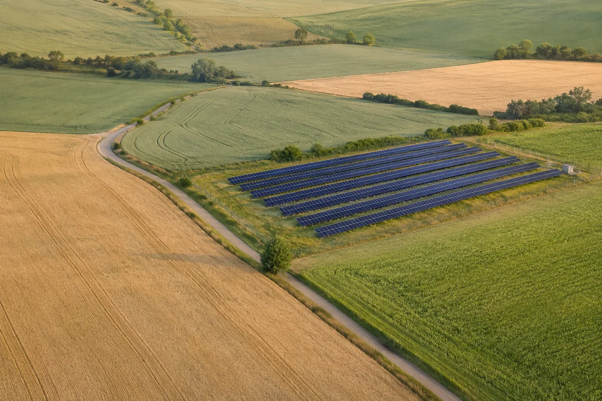

Qing Sun
PhD Student · Kyoto University
JSPS Research Fellow (DC2)
I am a doctoral student in the Division of Natural Resource Economics at Kyoto University. My research interests include agricultural and environmental economics, climate change, and carbon emissions.
My work examines how agricultural productivity changes when we account for carbon emissions and soil carbon sequestration. I also study the relationship between rural e-commerce and local public safety in China.
